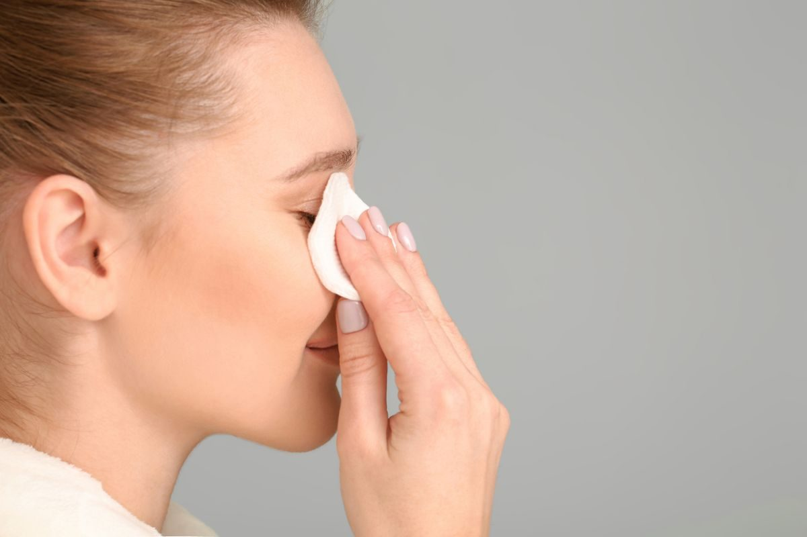
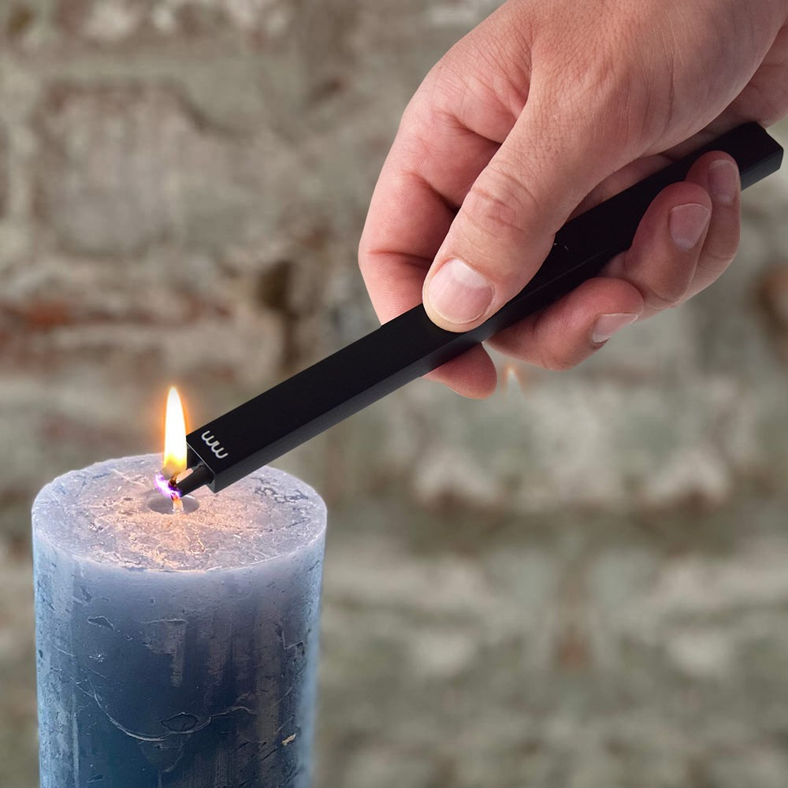

L'acquisto di tecnologia riutilizzabile invece di optare per prodotti usa e getta offre numerosi vantaggi sia a livello economico che ambientale. Prendiamo ad esempio gli accendini ricaricabili, che consentono di riutilizzare lo stesso dispositivo multiple volte. Questa scelta intelligente riduce significativamente la produzione di rifiuti, evitando che accendini monouso finiscano in discarica dopo un solo utilizzo. Inoltre, l'acquisto di accendini ricaricabili si traduce in un notevole risparmio economico nel lungo termine, poiché non è più necessario acquistare accendini usa e getta frequentemente.
Basta semplicemente ricaricarli con gas leggero come il butano o propano per continuare a utilizzarli a lungo. Questo non solo riduce i costi individuali, ma anche la richiesta di produzione di nuovi accendini monouso, contribuendo a ridurre l'impatto ambientale associato alla loro produzione e smaltimento. Inoltre, l'utilizzo di tecnologia riutilizzabile incoraggia una mentalità di consumo responsabile, promuovendo la consapevolezza dell'importanza del riutilizzo e della riduzione dei rifiuti, spingendo le persone a cercare soluzioni più sostenibili e durature per soddisfare le proprie esigenze tecnologiche.
Ecco alcuni esempi di come poter sfruttare le tecnologie riutilizzabili:
Tra i prodotti più inquinanti, usati quotidianamente da tantissime persone, ci sono i dischetti di cotone che, tra i costi di produzione e la modalità “usa e getta”, inquinano i fiumi, danneggiano la fauna locale e hanno un impatto grave sull'ecosistema. Per risparmiare e per ridurre l'impatto sull'ambiente, quindi, la soluzione molto più vantaggiosa è puntare sui dischetti riutilizzabili.'' Certificati REACH, sicuri, economici e sostenibili, i dischetti del set di Waabbi sono la scelta perfetta. Pratici ed efficaci, si possono lavare sia a mano che in lavatrice, possono essere riutilizzati tutte le volte che vuoi e hanno la capacità di struccare perfettamente eliminando ogni traccia di trucco anche dalle zone più delicate, come occhi e labbra: mai più senza! Il set, inoltre, si compone di 12 dischetti struccanti morbidi, 4 dischetti esfolianti per una pulizia del viso più profonda, tutti realizzati in bamboo e cotone e privi di plastica e trattamenti chimici, un sacchetto per il lavaggio in lavatrice e una borsetta per trasportarli e/o conservarli al riparo da polvere e sporco.
Esistono molti vantaggi nell'uso di un accendino al plasma ricaricabile per accendere o dare fuoco. Rispetto al tipico accendino con fiamma al butano, l'arco al plasma generato dagli accendini elettrici USB è completamente resistente al vento e agli spruzzi d’acqua, è più rispettoso dell'ambiente, è sicuro e ha una durata decisamente maggiore. Aspetti molto apprezzati da chi sceglie un accendino con tecnologia al plasma e che hanno reso gli accendini al butano quasi obsoleti. L'accendino al plasma, inoltre, non è pericoloso: non genera fiamme, non contiene gas infiammabili e molti modelli sono provvisti di sistemi di sicurezza che impediscono l'accensione dell'arco al plasma se il coperchio è chiuso e se l'accendino si trova in tasca o in borsa.